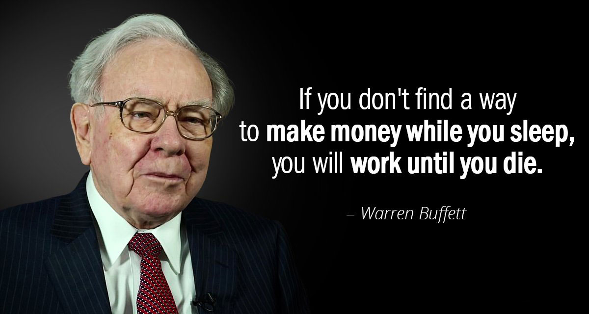
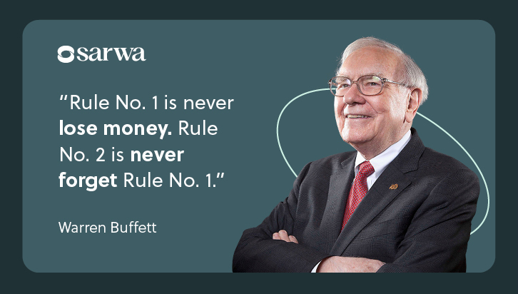
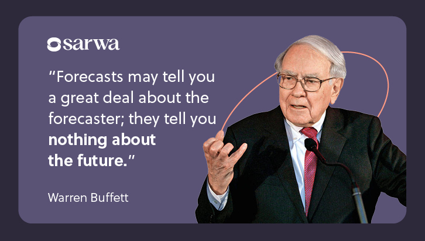
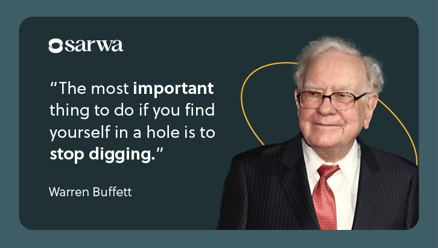
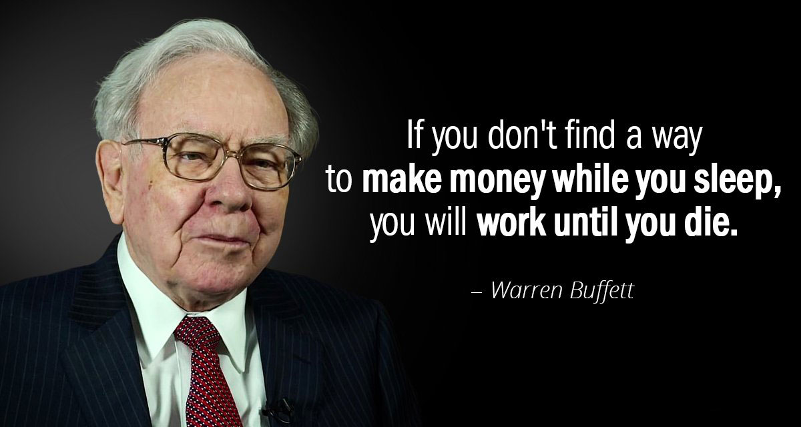
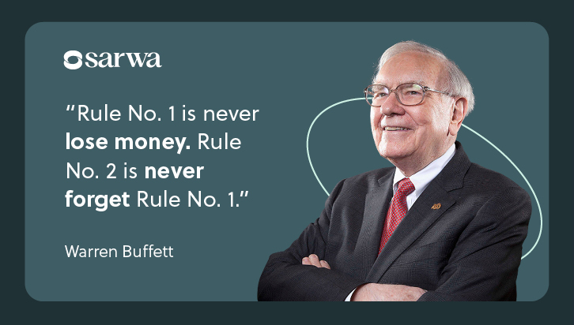
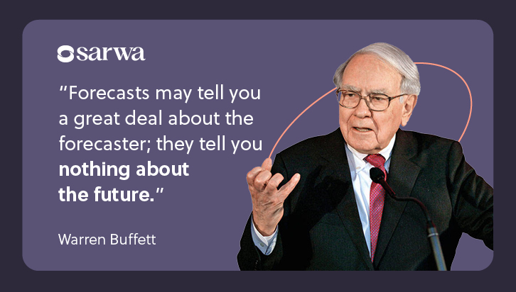
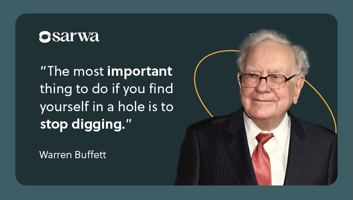

|
English Name | Warren Edward Buffett |
| Burmese Name | No | |
| Born | Born August 30, 1930 Omaha, Nebraska | |
| Nationality | American | |
| Education | Bachelor's Degree in Business Administration the University of Nebraska | |
| Professional | Chairman and CEO of Berkshire Hathaway and Investor | |
| Year Active | 1951–present | |
| Height | 1.78 m | |
| Spouse(s) | Astrid Menks in 2006 and Susan Buffett in 1952-2004 | |
| Children | Howard Graham Buffett, Susan Alice Buffett, Peter Buffett |
Warren Edward Buffett was born on August 30, 1930 in Omaha, Nebraska, as the second of three children and the only son of Leila (née Stahl) and Congressman Howard Buffett.[11] He began his education at Rose Hill Elementary School. In 1942, his father was elected to the first of four terms in the United States Congress, and after moving with his family to Washington, D.C., Warren finished elementary school, attended Alice Deal Junior High School and graduated from what was then Woodrow Wilson High School in 1947, where his senior yearbook picture reads: "likes math; a future stockbroker".[12] After finishing high school and finding success with his side entrepreneurial and investment ventures, Buffett wanted to skip college to go directly into business but was overruled by his father Buffett showcased an interest in business and investing at a young age. He was inspired by a book he borrowed from the Omaha public library at age seven, One Thousand Ways to Make $1000.[15] Much of Buffett's early childhood years were enlivened with entrepreneurial ventures. In one of his first business ventures, Buffett sold chewing gum, Coca-Cola, and weekly magazines door to door. He worked in his grandfather's grocery store. While still in high school, he made money delivering newspapers, selling golf balls and stamps, and detailing cars, among other means. On his first income tax return in 1944, Buffett took a $35 deduction for the use of his bicycle and watch on his paper route.[16] In 1945, as a high school sophomore, Buffett and a friend spent $25 to purchase a used pinball machine, which they placed in the local barber shop. Within months, they owned several machines in three different barber shops across Omaha. They later sold the business to a war veteran for $1,200.[17] Investor Benjamin Graham was a major influential figure on the young Warren Buffett. Buffett's interest in the stock market and investing dated back to his schoolboy days spent in the customers' lounge of a regional stock brokerage near his father's own brokerage office. His father took interest in cultivating and educating the young Warren's curiosity surrounding the subject of business and investing, even at one point taking him to visit the New York Stock Exchange when he was 10.[18] At 11, he bought three shares of Cities Service Preferred for himself, and three for his sister Doris Buffett (who also became a philanthropist).[19][20][21] At 15, Warren made more than $175 monthly delivering Washington Post newspapers. In high school, he invested in a business owned by his father and bought a 40-acre farm worked by a tenant farmer.[22] He bought the land when he was 14 years old with $1,200 of his savings.[22] By the time he finished college, Buffett had amassed $9,800 in savings (about $125,000 today).[17][23] In 1947, Buffett matriculated at the Wharton School of the University of Pennsylvania. He would have preferred to focus on his business ventures, but enrolled due to pressure from his father.[17] Warren studied there for two years and joined the Alpha Sigma Phi fraternity.[24] He then transferred to the University of Nebraska where he graduated with a Bachelor of Science in business administration in 1951.[25] After being rejected by Harvard Business School in the spring of 1950, Buffett enrolled at Columbia Business School of Columbia University upon learning that Benjamin Graham taught there. He earned a Master of Science in economics from Columbia in 1951.[26] After graduating, Buffett attended the New York Institute of Finance.[27] The basic ideas of investing are to look at stocks as business, use the market's fluctuations to your advantage, and seek a margin of safety. That's what Ben Graham taught us. A hundred years from now they will still be the cornerstones of investing.[28][29][30]
Buffett worked from 1951 to 1954 at his father's firm, Buffett-Falk & Co., as an investment salesman; from 1954 to 1956 at Graham-Newman Corp. as a securities analyst; from 1956 to 1969 at several investment partnerships as the general partner; and from 1970 as chairman and CEO of Berkshire Hathaway Inc. In 1951, Buffett discovered that Graham was on the board of GEICO insurance. Taking a train to Washington, D.C., on a Saturday, he knocked on the door of GEICO's headquarters until a janitor admitted him. There he met Lorimer Davidson, GEICO's vice president, and the two discussed the insurance business for hours, and Buffett made his first purchase of GEICO stock.[31] Davidson would eventually become Buffett's lifelong friend and a lasting influence,[32] and would later recall that he found Buffett to be an "extraordinary man" after only fifteen minutes. Buffett wanted to work on Wall Street but both his father and Ben Graham urged him not to. He offered to work for Graham for free, but Graham refused.[33] Buffett returned to Omaha and worked as a stockbroker while taking a Dale Carnegie public speaking course.[34] Using what he learned, he felt confident enough to teach an "Investment Principles" night class at the University of Nebraska-Omaha. The average age of his students was more than twice his own. During this time he also purchased a Sinclair gas station as a side investment but it was unsuccessful.[35] In 1954, Buffett accepted a job at Benjamin Graham's partnership. His starting salary was $12,000 a year (about $136,000 today).[23] There he worked closely with Walter Schloss. Graham was adamant that stock picks should provide a wide margin of safety after weighing the trade-off between their price and their intrinsic value. In 1956, Benjamin Graham retired and closed his partnership. At this time Buffett, who had amassed personal savings over $174,000 (about $1.95 million today)[23], decided to return to Omaha, where he would quickly start a series of investment partnerships. In 1957, Buffett operated three investment partnerships. By 1959, the total had grown to six partnerships. That year, Buffett met future partner Charlie Munger. In 1961, Buffett revealed that 35% of the partnerships' assets were invested in the Sanborn Map Company. He explained that Sanborn stock sold for only $45 per share in 1958, but the company's investment portfolio was worth $65 per share. This meant that Sanborn's map business was being valued at "minus $20". Buffett eventually purchased 23% of the company's outstanding shares as an activist investor, obtaining a seat for himself on the board of directors, and allied with other dissatisfied shareholders to control 44% of the shares. To avoid a proxy fight, the board offered to repurchase shares at fair value, paying with a portion of its investment portfolio. 77% of the outstanding shares were turned in.[36][37] Buffett had reaped a 50 percent return on investment in just two years.[38]
| Age | Net Worth |
|---|---|
| 15 | 3K |
| 19 | 10K |
| 21 | 20K |
| 30 | 1M |
| 34 | 3.4M |
| 37 | 10M |
| 43 | 34M |
| 47 | 67M |
| 53 | 620M |
| 58 | 2.3B |
| 59 | 3.8B |
| 66 | 17B |
| 72 | 36B |
| 83 | 58.5B |
 







In 1949, Buffett developed a crush on a young woman whose boyfriend had a ukulele. In an attempt to compete, he bought one of the instruments and has been playing it ever since. Though the attempt to capture her attention was unsuccessful, his music interest became a key part of his becoming a part of Susan Thompson's life, and led to their marriage. Buffett often plays the instrument at stockholder meetings and other opportunities. His love of the instrument led to the commissioning of two custom Dairy Queen ukuleles by Dave Talsma, one of which was auctioned for charity.[101] In 1952,[102] Buffett married Susan at Dundee Presbyterian Church. The following year, they had their first child, Susan Alice. She was followed by Howard (b. 1954) and Peter (b. 1958). The couple began living separately in 1977, although they remained married until Susan's death in July 2004. Their only daughter Susan lives in Omaha, is a national board member of Girls, Inc., and does charitable work through the Susan A. Buffett Foundation.[103] In 2006, on his 76th birthday, Buffett married his longtime companion, Astrid Menks, who was then 60 years old—she had lived with him since his wife's departure to San Francisco in 1977.[104][105] Susan had arranged for the two to meet before she left Omaha to pursue her singing career. All three were close and Christmas cards to friends were signed "Warren, Susie and Astrid".[106] Susan briefly discussed this relationship in an interview on the Charlie Rose Show shortly before her death, in a rare glimpse into Buffett's personal life.[107] Buffett disowned his son Peter's adopted daughter, Nicole, in 2006 after she participated in the Jamie Johnson documentary The One Percent about the growing economic inequality between the wealthy and the average citizen in the United States. Although his first wife referred to Nicole as one of her "adored grandchildren",[108] Buffett wrote Nicole a letter stating, "I have not emotionally or legally adopted you as a grandchild, nor have the rest of my family adopted you as a niece or a cousin".[109][110][111] By 2022, Buffett and she had reconciled.[112][113] Buffett's home in Omaha, Nebraska His 2006 annual salary was about $100,000, which is small compared to senior executive remuneration in comparable companies.[114] In 2008, he earned a total compensation of $175,000, which included a base salary of just $100,000.[115] In 1958, Buffett purchased a five-bedroom stucco house in Omaha, where he still lives, for US$31,500 (equivalent to $341,723 in 2023).[116][117] He also owned a vacation home in Laguna Beach, California,[118] which he purchased for $150,000 in 1971. He sold it for $7.5 million in 2018.[119] In 1989, after spending nearly $6.7 million of Berkshire's funds on a private jet, Buffett named it "The Indefensible", later renamed "The Indispensable".[120] This act was at odds with his past condemnation of extravagant spending by other CEOs.[121] Buffett sold the jet prior to mid-1999, and has since usually flown with Berkshire's flight services businesses.[122] Bridge is such a sensational game that I wouldn't mind being in jail if I had three cellmates who were decent players and who were willing to keep the game going twenty-four hours a day. —Buffett on bridge[123] Buffett is an avid bridge player, which he plays with Gates[124] and champion player Sharon Osberg; he is said to spend 12 hours a week playing the game.[125][126] In 2006, he sponsored a bridge match for the Buffett Cup. Modeled on the Ryder Cup in golf—held immediately before it in the same city—the teams are chosen by invitation, with a female team and five male teams provided by each country.[127] He is a dedicated, lifelong follower of Nebraska football, and attends as many games as his schedule permits. He supported the hire of Bo Pelini, following the 2007 season, stating, "It was getting kind of desperate around here".[128] He watched the 2009 game against Oklahoma from the Nebraska sideline, after being named an honorary assistant coach.[129] Buffett was elected to the American Philosophical Society in 2009.[130] Buffett worked with Christopher Webber on an animated series called "Secret Millionaires Club" with chief Andy Heyward of DiC Entertainment. The series features Buffett and Munger and teaches children healthy financial habits.[131][132] Buffett was raised as a Presbyterian, but has since described himself as agnostic.[133] In December 2006, it was reported that Buffett did not carry a mobile phone, did not have a computer at his desk, and drove his own automobile,[134] a Cadillac DTS.[135] In contrast to that, at the 2018 Berkshire Hathaway's shareholder meeting, he stated he uses Google as his preferred search engine.[136] In 2013 he had an old Nokia flip phone and had sent one email in his entire life.[137] In February 2020, Buffett revealed in a CNBC interview that he had traded in his flip phone for an iPhone 11.[138] Buffett reads five newspapers every day, beginning with the Omaha World Herald, which his company acquired in 2011. Buffett's speeches are known for mixing business discussions with humor. Each year, Buffett presides over Berkshire Hathaway's annual shareholder meeting in the Qwest Center in Omaha, Nebraska, an event drawing over 20,000 visitors from both the United States and abroad, giving it the nickname "Woodstock of Capitalism". Berkshire's annual reports and letters to shareholders, prepared by Buffett, frequently receive coverage by the financial media. Buffett's writings are known for containing quotations from sources as varied as the Bible and Mae West,[139] as well as advice in a folksy, Midwestern style and numerous jokes. In April 2017, Buffett (an avid Coca-Cola drinker and shareholder in the company) agreed to have his likeness placed on Cherry Coke products in China. Buffett was not compensated for this advertisement.[140][141] Buffett is very distantly related to the 44th president of the United States, Barack Obama.[142] Buffett was a longtime friend of singer-songwriter Jimmy Buffett until Jimmy's death in September 2023, and they would often refer to one another as "Uncle Warren" and "Cousin Jimmy". The two took a DNA test which revealed no relation.[143]